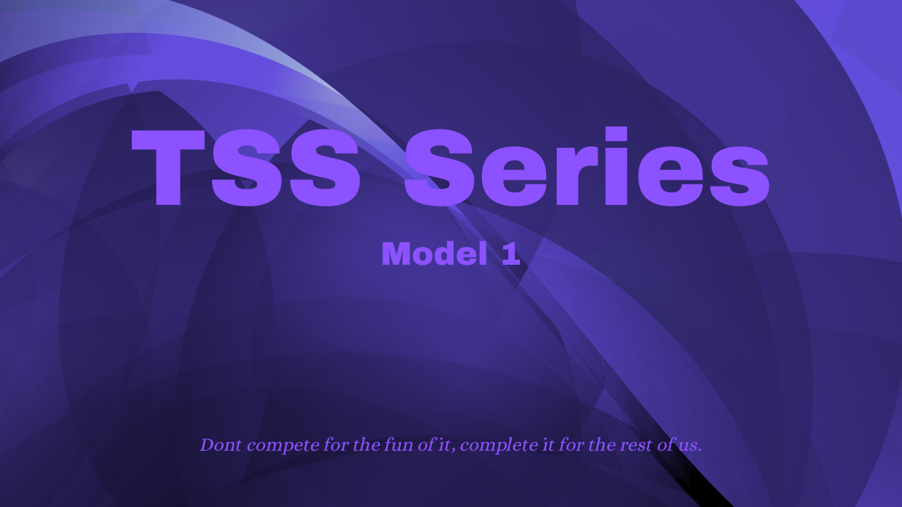

Lightweight
Designed with consumer hardware, TSS can convert a massive dataset of 50,000 sentences or more without the need of a powerful GPU.
TSS-1 is the first model in the new Q&A model series designed by Wolf Studios. Lightweight, powerful, and created for offline use.

Designed with consumer hardware, TSS can convert a massive dataset of 50,000 sentences or more without the need of a powerful GPU.
Built with the capability of searching through tens of thousands of sentences while returning the most relavant information.
TSS was built around the idea that not everyone had access to fast internet. This has pushed us to create TSS in a way that does not require internet at all.
An archive of my trip to Italy created for my history class. Explore ancient Rome, historical locations, photographs, and everything collected along the way.
Explore Project→